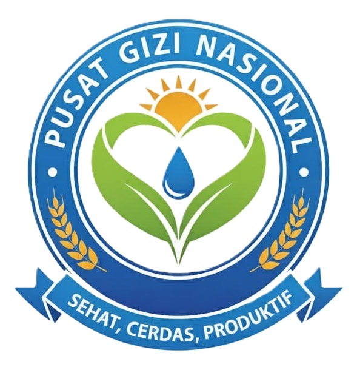

Selamat Datang di Yayasan Pusat Gizi Nasional
Website ini menyediakan informasi tentang kegiatan yayasan, mitra SPPG, dan layanan gizi masyarakat.

Website ini menyediakan informasi tentang kegiatan yayasan, mitra SPPG, dan layanan gizi masyarakat.